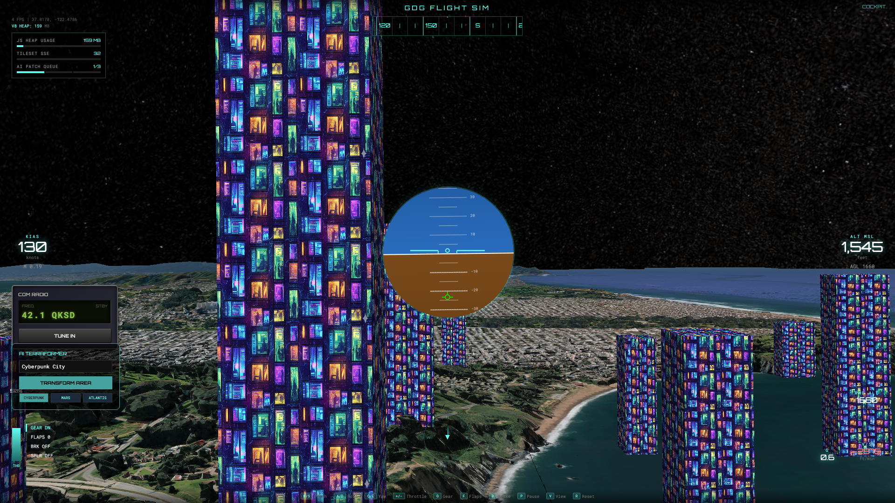

1. Introduction & Setup
Welcome to the Build with AI: Flight Simulator Codelab!
How to integrate Google Maps Photorealistic 3D Tiles, Earth Engine, Vertex AI, and Gemini into a unified 3D web application.
What we're building
A photorealistic 3D globe, terraformed in real-time by Generative AI. We are building an interactive 3D web application powered by Google Maps Photorealistic Tiles and AI-driven terraforming.

What you'll need (Local Setup)
- A modern web browser (Google Chrome recommended)
- A Google Cloud Platform account with billing enabled
- Python 3.9+ installed on your computer
- Git installed on your computer
- An IDE like VS Code or Cursor
- The Gemini Code Assist extension installed in your IDE, or access to the Gemini web interface. Optionally, the Gemini CLI.
2. Google Cloud Setup
Before writing code, we need to provision our cloud resources and set up authentication.
1. Select or Create a Project
Navigate to console.cloud.google.com. In the project selector page, select or create a Google Cloud project.
2. Enable APIs
We need to enable the following APIs for our project:
- Vertex AI API: Used for the Imagen model to generate textures.
- Earth Engine API: Used to fetch satellite imagery of the globe.
- Map Tiles API: Used to render the 3D photorealistic tiles in the browser.
3. Service Account Setup
Our Python backend needs permission to call Earth Engine and Vertex AI.
- Go to IAM & Admin > Service Accounts in the Cloud Console.
- Create a new service account named `flight-sim-backend`.
- Grant it the following roles: Vertex AI User and Earth Engine Resource Viewer.
- Click into the service account, go to the Keys tab, and click Add Key > Create new key (JSON format).
- Download the file and rename it to `service-account-key.json`. We will upload this to our project shortly.
4. Maps API Key
You also need an API key for the frontend Cesium viewer.
- Go to APIs & Services > Credentials.
- Click Create Credentials > API Key.
- Copy this key; you will paste it into your `index.html` file later.
3. Architecture & Concepts
Traditional 3D vs Generative 3D
Building a 3D application used to require a degree in linear algebra, weeks of boilerplate setup, and deep knowledge of WebGL. Starting from zero meant fighting projection matrices just to render a spinning cube.
The AI Way: Describe the architecture. Delegate the boilerplate to Gemini. Focus entirely on user experience and vision.
The Stack
- Frontend: CesiumJS (Framework-free 3D Globes, Pure JS).
- Data: Google Maps Photorealistic 3D Tiles.
- Backend: Python Flask + Google Cloud.
- Brain: Gemini for Code + Vertex AI (Imagen) for Vision and Earth Engine for satellite imagery.
The Generative Bridge (Terraforming)
How does "terraforming" actually work in our stack?
- 1. Snapshot: Earth Engine grabs a Sentinel-2 satellite image of your current latitude/longitude.
- 2. Reimagine: Vertex AI (Imagen) takes your prompt and repaints the terrain.
- 3. Project: We texture-map the new image back onto the 3D globe seamlessly using CesiumJS.

4. Starter Code Hub
We've prepared the base architecture (CesiumJS setup and Flask backend) so we can focus on the AI integration.
Configure Authentication
Upload the `service-account-key.json` file you created in Step 2 to the root of the `infinite-loop-simulator` directory.
Open `app.py` and update the `PROJECT_ID` variable with your actual Google Cloud Project ID.
Open `index.html` and update `GOOGLE_API_KEY` with your Maps API key.
Pre-flight Checklist
If you see a globe, you are ready to proceed.
5. Building the HUD
Let Gemini do the heavy lifting for our user interface. We will use the Gemini Code Assist plugin or the web interface.
Injecting HTML
Look for the <body> tag in your `index.html`. Paste the generated HUD container inside it, above the Cesium container.
Injecting CSS
Look for the <style> block in the head of your `index.html`. Paste the neon CSS rules inside.
Refresh your browser. You should now have a neon overlay on top of your globe!
6. Flight Physics & Terraforming API
Flight Physics
The base simulator is a bit sluggish. Let's make it more responsive.
Terraforming API
Our backend (`app.py`) has a `/terraform` endpoint that takes JSON input: `lat`, `lon`, and `prompt`. We need our frontend to send these coordinates to connect to Vertex AI.
7. Memory Management
Browsers tightly limit memory (RAM/VRAM). Loading 3D photorealistic tiles and dynamically generated 4K textures will quickly exhaust resources, leading to crashes. Every time you terraform, you add a `Primitive`. If you don't remove old ones, WebGL crashes.

Garbage Collection
Call this `cleanupPrimitives()` function inside your main flight loop (`preUpdate`) or right before triggering a new terraform generation.
8. Challenges
Take the wheel. Remember to be specific with Gemini, iterate step-by-step, and debug with AI if things break.
- Compass: Add a functioning Compass (Heading in degrees). It should read from `ac.heading` and convert from radians to degrees.
- Altimeter Alarms: Monitor your altitude (`ac.alt`). Make the text color of the HUD change to Red if you fly below 500 meters.
- UI Dropdown: Add an HTML `<select>` dropdown to the top left (options: Cyberpunk, Mars Colony, Fantasy Castle) and a "Terraform" button.
- Hooking UI: Modify the button's onclick handler to grab the selected value and pass it to `triggerTerraform(prompt)`.
- Python Prompting: Go into `app.py`. Find the Vertex AI `edit_image` call. Have Gemini modify the base prompt string to enhance the specific biome style coming from the frontend (e.g., adding "high resolution, cinematic lighting").
- Image Downsampling: Ask Gemini to write a Python function inside `app.py` using PIL (Pillow) or base64 manipulation to resize the generated base64 image down to 512x512 before sending it back to the frontend.
9. Mission Accomplished! 🚀
You successfully built an AI-powered 3D application using Google Cloud.
📸 Take screenshots of your world.
Post on LinkedIn with #BuildWithAI